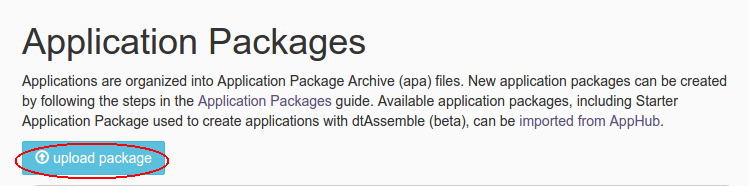

How to customize an app-template
This document describes how to customize an app-template.
Steps to customize the application
-
Make sure you have following utilities installed on your machine and available on
PATHin environment variable: -
Use following command to clone the repository:
git clone git@github.com:DataTorrent/moodI.git -
Change directory to containing app-template you wish to customize:
cd moodI/app-templates/kafka-to-hdfs-filter-transform/ -
Import this maven project in your favorite IDE (e.g. eclipse).
-
Change the source code as per your requirements.
-
Make respective changes in the test case and
properties.xmlbased on your environment. -
Compile this project using maven:
mvn clean packageThis will generate the application package file with
.apaextension in thetargetdirectory. -
Go to DataTorrent UI Management console on web browser. Click on the
Developtab from the top navigation bar.
-
Click on
upload packagebutton and upload the generated.apafile.  -
Application package page is shown with the listing of all packages. Click on the
Launchbutton for the uploaded application package. Follow the steps for launching an application.
Note on customization
-
Application.javadefines the Application class which defines the application pipeline. Application is represented as directed acyclic graph (DAG). Vertices of the graph represents operators or computational units. Edges represents data flow or streams. -
Applicationclass implementsStreamingApplicationinterface by defining implementation forpopulateDAGmethod . -
populateDAGmethods receives an argument with an instance of DAG object. App developers can add operators, streams to this dag object to define the pipeline based on the need. -
Second argument to
populateDAGmethod is an instance of Configuration object. All the properties specified inproperties.xmlwill be available through this configuration object. -
Most of the commonly used functionality, connectors are available in moodI, malhar operator library. If required functionality is not available in the operator library; one can implement own operators for custom computations.
-
Add the operators to the DAG using
dag.addOperator()API and connect the operators with upstream, downstream operators usingdag.addStream()API.For example, suppose one needs to modify
kafka-to-hdfs-filter-transformsuch that count of tuples discarded by the filter operator should be displayed on the console. This can be achived by adding following code topopulateDAGmethod inApplication.java:
Counter counter = dag.addOperator("counter", Counter.class);
ConsoleOutputOperator console = dag.addOperator("console", ConsoleOutputOperator.class);
dag.addStream("FilteredOut", filterOperator.falsePort, counter.input);
dag.addStream("FilteredOutToConsole", counter.output, console.input);
Follow the customization steps for applying your changes.